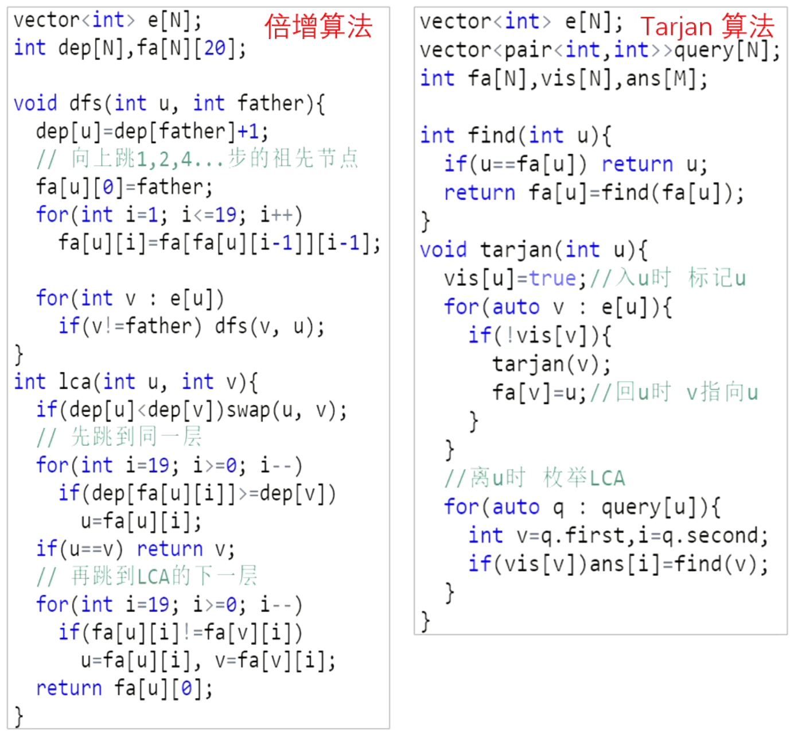

【模板】最近公共祖先（LCA）
题目描述
如题，给定一棵有根多叉树，请求出指定两个点直接最近的公共祖先。
输入格式
第一行包含三个正整数
接下来
接下来
输出格式
输出包含
样例 #1
样例输入 #1
15 5 423 132 445 151 462 473 283 591 2104 5
样例输出 #1
xxxxxxxxxx51424314454
提示
对于
对于
对于
样例说明：
该树结构如下：

第一次询问：
第二次询问：
第三次询问：
第四次询问：
第五次询问：
故输出依次为
2021/10/4 数据更新 @fstqwq：应要求加了两组数据卡掉了暴力跳。
LCA（倍增算法实现）
x1
3using namespace std;4const int N = 5e5 + 10;5
6int n, m, a, b, s;7vector<int> e[N];8int dep[N], fa[N][20];9
10void dfs(int u, int father) {11 dep[u] = dep[father] + 1;12 fa[u][0] = father;13 for (int i = 1; i <= 19; ++i) {14 fa[u][i] = fa[fa[u][i - 1]][i - 1];15 }16 for (int v: e[u]) {17 if (v != father) dfs(v, u);18 }19}20
21int lca(int u, int v) {22 if (dep[u] < dep[v]) swap(u, v);23 for (int i = 19; i >= 0; i--) {24 if (dep[fa[u][i]] >= dep[v])25 u = fa[u][i];26 }27 if (u == v) return v;28 for (int i = 19; i >= 0; i--) {29 if (fa[u][i] != fa[v][i]) {30 u = fa[u][i];31 v = fa[v][i];32 }33 }34 return fa[u][0];35}36
37int main() {38 cin >> n >> m >> s;39 for (int i = 0; i < n - 1; ++i) {40 scanf("%d%d", &a, &b);41 e[a].push_back(b);42 e[b].push_back(a);43 }44 dfs(s, 0);45 for (int i = 0; i < m; ++i) {46 scanf("%d%d", &a, &b);47 cout << lca(a, b) << endl;48 }49 return 0;50}
【321 倍增算法 P3379【模板】最近公共祖先（LCA）】 https://www.bilibili.com/video/BV1vg41197Xh/?share_source=copy_web&vd_source=8fa0ddfc571cb8e214b881be981477a4


LCA（Tarjan算法实现）
xxxxxxxxxx491
3using namespace std;4const int N = 5e5 + 10;5int n, m, s;6vector<int> e[N];7int ans[N], fa[N];8bool vis[N];9typedef pair<int, int> PII;10vector<PII> query[N];11
12int find(int x) {13 if (fa[x] != x) fa[x] = find(fa[x]);14 return fa[x];15}16
17void tarjan(int u) {18 vis[u] = true;19 for (auto v: e[u]) {20 if (!vis[v]) {21 tarjan(v);22 fa[v] = u;23 }24 }25 for (auto q: query[u]) {26 int v = q.first, i = q.second;27 if (vis[v]) ans[i] = find(v);28 }29}30
31int main() {32 cin >> n >> m >> s;33 int a, b;34 for (int i = 1; i <= n; ++i) fa[i] = i;35 for (int i = 0; i < n - 1; ++i) {36 scanf("%d%d", &a, &b);37 e[a].push_back(b);38 e[b].push_back(a);39 }40 for (int i = 1; i <= m; ++i) {41 scanf("%d%d", &a, &b);42 query[a].push_back({b, i});43 query[b].push_back({a, i});44 }45 tarjan(s);46 for (int i = 1; i <= m; ++i)47 cout << ans[i] << endl;48 return 0;49} 利用Tarjan实现LCA是离线做法，因为fa数组是动态变化的，也就是find()函数的返回结果是不断变化的，可以看最后一张图。
但是Tarjan算法并不会维护一个深度数组，所以在很多复合类型的题目中，可能应用不了。因为我们很多时候都要通过深度数组来维护一些别的信息帮助解题。
【322 Tarjan算法 P3379【模板】最近公共祖先（LCA）】 https://www.bilibili.com/video/BV1A94y12737/?share_source=copy_web&vd_source=8fa0ddfc571cb8e214b881be981477a4
正反都添加到query中是为了保证查询一定是可查到结果的。
同时要注意到：只有DFS返回之后，结点的父亲才被更新。
倍增算法和Tarjan算法的比较


Tarjan算法总结
Tarjan求强连通分量
有向图强连通分量：在有向图G中，如果两个顶点vi,vj间（vi>vj）有一条从vi到vj的有向路径，同时还有一条从vj到vi的有向路径，则称两个顶点强连通(strongly connected)。如果有向图G的每两个顶点都强连通，称G是一个强连通图。有向图的极大强连通子图，称为强连通分量(strongly connected components)。
反正就是在图中找到一个最大的图，使这个图中每个两点都能够互相到达。这个最大的图称为强连通分量，同时一个点也属于强连通分量。
[USACO06JAN] The Cow Prom S
题目描述
有一个
个点， 条边的有向图，请求出这个图点数大于 的强连通分量个数。 输入格式
第一行为两个整数
和 。 第二行至
行，每一行有两个整数 和 ，表示有一条从 到 的有向边。 输出格式
仅一行，表示点数大于
的强连通分量个数。
xxxxxxxxxx501
3using namespace std;4const int N = 1e4 + 10;5
6int n, m;7vector<int> e[N];8int dfn[N], low[N], tot;9int stk[N], instk[N], top;10int scc[N], siz[N], cnt;11
12void tarjan(int x) {13 dfn[x] = low[x] = ++tot;14 stk[++top] = x, instk[x] = 1;15 for (int y: e[x]) {16 if (!dfn[y]) {17 tarjan(y);18 low[x] = min(low[x], low[y]);19 } else if (instk[y]) {20 low[x] = min(low[x], dfn[y]);21 }22 }23 if (dfn[x] == low[x]) {24 int y;25 ++cnt;26 do {27 y = stk[top--];28 instk[y] = 0;29 scc[y] = cnt;30 ++siz[cnt];31 } while (y != x);32 }33}34
35int main() {36 cin >> n >> m;37 int a, b;38 for (int i = 0; i < m; ++i) {39 cin >> a >> b;40 e[a].push_back(b);41 }42 for (int i = 1; i <= n; ++i)43 if (!dfn[i]) tarjan(i);44 int res = 0;45 for (int i = 1; i <= n; ++i) {46 if (dfn[i] == low[i] && siz[scc[i]] > 1) res++;47 }48 cout << res << endl;49 return 0;50}
Tarjan缩点
其实这也是利用了tarjan求强连通分量的方法，对于一些贡献具有传导性，比如友情啊、路径上的权值啊等等非常适用。思想就是因为强连通分量中的每两个点都是强连通的，可以将一个强连通分量当做一个超级点，而点权按题意来定。
首先我们先看一下一个问题：一个有向图，有n个点以及m条边，我们至少应该添加几条边才能使整个图变成强连通图。或者是一个无向图至少添加几条边变成连通图。
首先我们对于一个有向无环的图（DAG），至少添加几条边才能使它变为强连通图？我们很容易根据有向无环图的性质得到，我们计算入度为零的点数为a，出度为零的点数为b，那么我们至少需要添加的边数为max(a,b)，如果只有一个点的话，我们不需要添加任何边。
那么我们怎么把一个图转换为DAG呢，因为上面给出的图可能存在环，那么我们就会想到把已经组成全连通的子图转换成一个点来看，那么我们最终的图就不会包含环了。
其实我们上述的tarjan算法已经求出了每个点属于的连通集编号了，其实每个连通集编号就代表了一个最大连通集。
Tarjan求割点、桥
割点：在无向连通图中，如果将其中一个点以及所有连接该点的边去掉，图就不再连通，那么这个点就叫做割点（cut vertex / articulation point）。
割点怎么求？
与之前强连通分量中的tarjan差不多。但要加一个特判，
首先选定一个根节点，从该根节点开始遍历整个图（使用DFS）。
对于根节点，判断是不是割点很简单——计算其子树数量，如果有2棵即以上的子树，就是割点。因为如果去掉这个点，这两棵子树就不能互相到达。（注意这里的概念，称之为子树，表示了子树互不相连，而且不连向祖先）
对于非根节点，判断是不是割点就有些麻烦了。我们维护两个数组dfn[]和low[]（就是上面用过的），对于边(u, v)，如果low[v]>=dfn[u]，此时u就是割点。这是我认为最难以理解的一部分，可以这样想：low[v]>=dfn[u]也就意味着，v不能回到u的前面，这是一种什么情况呢？
显然如果节点U的所有孩子节点可以不通过父节点U而访问到U的祖先节点（也就是low[v]<dfn[u]），那么说明此时去掉节点U不影响图的连通性，U就不是割点。
相反，如果节点U至少存在一个孩子顶点，必须通过父节点U才能访问到U的祖先节点，也就是如果存在一个孩子low[v]>=dfn[u]，那么去掉节点U后，顶点U的祖先节点和孩子节点就不连通了，说明U是一个割点。
争议点
关于tarjan算法，一直有一个很大的争议，就是low[u]=min(low[u],dfn[v]);（你可以发现这和上面求强连通分量是不一杨的）
这句话，如果改成low[u]=min(low[u],low[v])就会出错，但是在求强连通分量时却没有问题。
根据许多大佬的观点，我想提出自己的一点看法。
在求强连通分量时，如果v已经在栈中，那么说明u，v一定在同一个强连通分量中，所以到最后low[u]=low[v]是必然的，提前更新也不会有问题。
但是在求割点时，low的定义有了小小的变化，不再是最早能追溯到的祖先，（因为是个无向图）没有意义，应该是最早能绕到的割点，为什么用绕到，是因为是无向边，所以有另一条路可以走，如果把dfn[v]改掉就会上翻过头，可能翻进另一个环中，所以wa掉，仅是本人的一些个人看法，不知道讲的对不对，请各位指教。
原文链接：https://blog.csdn.net/csyifanZhang/article/details/105370924
LCA - Lowest Common Ancestor
题面翻译
Description:
一棵树是一个简单无向图，图中任意两个节点仅被一条边连接，所有连通无环无向图都是一棵树。-Wikipedia
最近公共祖先（LCA）是……（此处省去对LCA的描述），你的任务是对一棵给定的树

例如图中
Input:
输入的第一行为数据组数
输入数据保证只有一个根节点并且没有环。
Output:
对于每一组数据输出
Sample Input:
xxxxxxxxxx12112733 2 3 44053 5 6 760708090102115 7122 7
Sample Output:
xxxxxxxxxx31Case 1:2331
Translated by @yxl_gl
题目描述
A tree is an undirected graph in which any two vertices are connected by exactly one simple path. In other words, any connected graph without cycles is a tree. - Wikipedia
The lowest common ancestor (LCA) is a concept in graph theory and computer science. Let T be a rooted tree with N nodes. The lowest common ancestor is defined between two nodes v and w as the lowest node in T that has both v and w as descendants (where we allow a node to be a descendant of itself). - Wikipedia
Your task in this problem is to find the LCA of any two given nodes v and w in a given tree T.

For example the LCA of nodes 9 and 12 in this tree is the node number 3.
Input
The first line of input will be the number of test cases. Each test case will start with a number N the number of nodes in the tree, 1 <= N <= 1,000. Nodes are numbered from 1 to N. The next N lines each one will start with a number M the number of child nodes of the Nth node, 0 <= M <= 999 followed by M numbers the child nodes of the Nth node. The next line will be a number Q the number of queries you have to answer for the given tree T, 1 <= Q <= 1000. The next Q lines each one will have two number v and w in which you have to find the LCA of v and w in T, 1 <= v, w <= 1,000.
Input will guarantee that there is only one root and no cycles.
Output
For each test case print Q + 1 lines, The first line will have “Case C:” without quotes where C is the case number starting with 1. The next Q lines should be the LCA of the given v and w respectively.
Example
xxxxxxxxxx181Input:213743 2 3 45063 5 6 7708090100112125 7132 714Output:16Case 1:173181
输入格式
输出格式
题意翻译
Description:
一棵树是一个简单无向图，图中任意两个节点仅被一条边连接，所有连通无环无向图都是一棵树。-Wikipedia

例如图中99和1212号节点的���*L*C*A*为33号节点

Sample Input:
xxxxxxxxxx12112733 2 3 44053 5 6 760708090102115 7122 7
Sample Output:
xxxxxxxxxx31Case 1:2331
Translated by @yxl_gl
输入输出样例
无
xxxxxxxxxx721
3using namespace std;4const int N = 1010;5
6int a, b;7vector<int> e[N];8int dep[N], fa[N][20];9bool st[N];10
11void dfs(int u, int father) {12 dep[u] = dep[father] + 1;13 fa[u][0] = father;14 for (int i = 1; i <= 19; ++i) {15 fa[u][i] = fa[fa[u][i - 1]][i - 1];16 }17 for (int v: e[u]) {18 if (v != father) dfs(v, u);19 }20}21
22int lca(int u, int v) {23 if (dep[u] < dep[v]) swap(u, v);24 for (int i = 19; i >= 0; i--) {25 if (dep[fa[u][i]] >= dep[v])26 u = fa[u][i];27 }28 if (u == v) return v;29 for (int i = 19; i >= 0; i--) {30 if (fa[u][i] != fa[v][i]) {31 u = fa[u][i];32 v = fa[v][i];33 }34 }35 return fa[u][0];36}37
38void solve(int tt) {39 int n, m, q;40 cout << "Case:" << tt << endl;41
42 memset(dep, 0, sizeof dep);43 memset(fa, 0, sizeof fa);44 memset(st, false, sizeof st);45
46 for (int i = 0; i < N; ++i) e[i].clear();47 cin >> n;48 for (int i = 1; i <= n; ++i) {49 cin >> m;50 for (int j = 0; j < m; ++j) {51 scanf("%d", &a);52 e[a].push_back(i);53 e[i].push_back(a);54 st[a] = true;55 }56 }57 int s = 1;58 while (st[s]) s++;59 dfs(s, 0);60 cin >> q;61 for (int i = 0; i < q; ++i) {62 scanf("%d%d", &a, &b);63 cout << lca(a, b) << endl;64 }65}66
67int main() {68 int t;69 cin >> t;70 for (int i = 1; i <= t; ++i) solve(i);71 return 0;72}
[USACO06JAN] The Cow Prom S
题目描述
有一个
输入格式
第一行为两个整数
第二行至
输出格式
仅一行，表示点数大于
样例 #1
样例输入 #1
xxxxxxxxxx515 422 433 541 254 1
样例输出 #1
xxxxxxxxxx111
提示
数据规模与约定
对于全部的测试点，保证
xxxxxxxxxx501#include <bits/stdc++.h>2using namespace std;4const int N = 1e4 + 10;5int n, m;7vector<int> e[N];8int dfn[N], low[N], tot;9int stk[N], instk[N], top;10int scc[N], siz[N], cnt;11void tarjan(int x) {13dfn[x] = low[x] = ++tot;14stk[++top] = x, instk[x] = 1;15for (int y: e[x]) {16if (!dfn[y]) {17tarjan(y);18low[x] = min(low[x], low[y]);19} else if (instk[y]) {20low[x] = min(low[x], dfn[y]);21}22}23if (dfn[x] == low[x]) {24int y;25++cnt;26do {27y = stk[top--];28instk[y] = 0;29scc[y] = cnt;30++siz[cnt];31} while (y != x);32}33}34int main() {36cin >> n >> m;37int a, b;38for (int i = 0; i < m; ++i) {39cin >> a >> b;40e[a].push_back(b);41}42for (int i = 1; i <= n; ++i)43if (!dfn[i]) tarjan(i);44int res = 0;45for (int i = 1; i <= n; ++i) {46if (dfn[i] == low[i] && siz[scc[i]] > 1) res++;47}48cout << res << endl;49return 0;50}
【341 强连通分量 Tarjan 算法】 https://www.bilibili.com/video/BV1SY411M7Tv/?share_source=copy_web&vd_source=8fa0ddfc571cb8e214b881be981477a4


会议
题目描述
有一个村庄居住着
输入格式
第一行，一个数
接下来
输出格式
一行输出两个数字
样例 #1
样例输入 #1
xxxxxxxxxx41421 232 343 4
样例输出 #1
xxxxxxxxxx112 4
提示
数据范围
对于
对于
树的重心
xxxxxxxxxx691
3using namespace std;4const int N = 1e5 + 10;5int n, idx, h[N], ne[N * 2], e[N * 2], dist[N];6int maxx[N] = {0};7
8void add(int a, int b) {9 ne[idx] = h[a];10 e[idx] = b;11 h[a] = idx++;12}13
14void solve(int x) {15 memset(dist, -1, sizeof dist);16 dist[x] = 0;17 queue<int> q;18 q.push(x);19 while (q.size()) {20 int t = q.front();21 q.pop();22
23 for (int i = h[t]; ~i; i = ne[i]) {24 int j = e[i];25 if (dist[j] == -1) {26 dist[j] = dist[t] + 1;27 q.push(j);28 }29 }30 }31}32
33int dfs(int u, int fa) {34 int res = 0;35 for (int i = h[u]; ~i; i = ne[i]) {36 if (e[i] == fa) continue;37 int t = dfs(e[i], u);38 res += t;39 maxx[u] = max(maxx[u], t);40 }41 maxx[u] = max(maxx[u], n - 1 - res);42 return res + 1;43}44
45int main() {46 cin >> n;47 int a, b;48 memset(h, -1, sizeof h);49 for (int i = 1; i < n; ++i) {50 cin >> a >> b;51 add(a, b);52 add(b, a);53 }54 dfs(1, -1);55 int in = 0, minn = 2e9;56 for (int i = 1; i <= n; ++i) {57 if (minn > maxx[i]) {58 in = i;59 minn = maxx[i];60 }61 }62 solve(in);63 int res = 0;64 for (int i = 1; i <= n; ++i) {65 res += dist[i];66 }67 cout << in << " " << res << endl;68 return 0;69}树的重心：找到一个点，其所有的子树中最大的子树节点数最少，那么这个点就是这棵树的重心，删去重心后，生成的多棵树尽可能平衡。换句话说，删除这个点后最大连通块（一定是树）的结点数最小。
性质：
树中所有点到某个点的距离和中，到重心的距离和是最小的（实际应用中经常用到此性质）。
把两棵树通过一条边相连，新的树的重心在原来两棵树重心的连线上。
一棵树添加或者删除一个节点，树的重心最多只移动一条边的位置。
一棵树最多有两个重心，且相邻。
医院设置
题目描述
设有一棵二叉树，如图：
其中，圈中的数字表示结点中居民的人口。圈边上数字表示结点编号，现在要求在某个结点上建立一个医院，使所有居民所走的路程之和为最小，同时约定，相邻接点之间的距离为
输入格式
第一行一个整数
接下来的
输出格式
一个整数，表示最小距离和。
样例 #1
样例输入 #1
xxxxxxxxxx615213 2 334 0 0412 4 5520 0 0640 0 0
样例输出 #1
xxxxxxxxxx1181
提示
数据规模与约定
对于
带权的树的重心
xxxxxxxxxx701
3using namespace std;4const int N = 1e5 + 10;5int n, idx, h[N], ne[N * 2], e[N * 2], dist[N];6int tot, maxx[N] = {0}, w[N];7
8void add(int a, int b) {9 ne[idx] = h[a];10 e[idx] = b;11 h[a] = idx++;12}13
14void solve(int x) {15 memset(dist, -1, sizeof dist);16 dist[x] = 0;17 queue<int> q;18 q.push(x);19 while (q.size()) {20 int t = q.front();21 q.pop();22
23 for (int i = h[t]; ~i; i = ne[i]) {24 int j = e[i];25 if (dist[j] == -1) {26 dist[j] = dist[t] + 1;27 q.push(j);28 }29 }30 }31}32
33int dfs(int u, int fa) {34 int res = 0;35 for (int i = h[u]; ~i; i = ne[i]) {36 if (e[i] == fa) continue;37 int t = dfs(e[i], u);38 res += t;39 maxx[u] = max(maxx[u], t);40 }41 maxx[u] = max(maxx[u], tot - res - w[u]);42 return res + w[u];43}44
45int main() {46 cin >> n;47 int a, b;48 memset(h, -1, sizeof h);49 for (int i = 1; i <= n; ++i) {50 cin >> w[i] >> a >> b;51 tot += w[i];52 if (a) add(a, i), add(i, a);53 if (b) add(b, i), add(i, b);54 }55 dfs(1, -1);56 int in = 0, minn = 2e9;57 for (int i = 1; i <= n; ++i) {58 if (minn > maxx[i]) {59 in = i;60 minn = maxx[i];61 }62 }63 solve(in);64 int res = 0;65 for (int i = 1; i <= n; ++i) {66 res += dist[i] * w[i];67 }68 cout << res << endl;69 return 0;70}
[NOI2011] 道路修建
题目描述
在 W 星球上有
每条道路的修建都要付出一定的费用，这个费用等于道路长度乘以道路两端 的国家个数之差的绝对值。例如，在下图中，虚线所示道路两端分别有
由于国家的数量十分庞大，道路的建造方案有很多种，同时每种方案的修建费用难以用人工计算，国王们决定找人设计一个软件，对于给定的建造方案，计算出所需要的费用。请你帮助国王们设计一个这样的软件。
输入格式
输入的第一行包含一个整数
接下来
输出格式
输出一个整数，表示修建所有道路所需要的总费用。
样例 #1
样例输入 #1
xxxxxxxxxx61621 2 131 3 141 4 256 3 165 2 1
样例输出 #1
xxxxxxxxxx1120
提示
对于
| 测试点编号 | |
|---|---|
计算子树中点的个数
xxxxxxxxxx441
3using namespace std;4using LL = long long int;5const int N = 1e6 + 10;6int n, idx, h[N], ne[N * 2], e[N * 2], c[N * 2];7LL tot;8
9void add(int a, int b, int t) {10 c[idx] = t;11 ne[idx] = h[a];12 e[idx] = b;13 h[a] = idx++;14}15
16int check(int a, int b) {17 if (a > b) return a - b;18 else return b - a;19}20
21int dfs(int u, int fa) {22 int res = 0;23 for (int i = h[u]; ~i; i = ne[i]) {24 if (e[i] == fa) continue;25 int t = dfs(e[i], u);26 res += t;27 tot += check(n - t, t) * (LL) c[i];28 }29 return res + 1;30}31
32int main() {33 cin >> n;34 int a, b, t;35 memset(h, -1, sizeof h);36 for (int i = 1; i < n; ++i) {37 cin >> a >> b >> t;38 add(a, b, t);39 add(b, a, t);40 }41 dfs(1, -1);42 cout << tot << endl;43 return 0;44}
[USACO19DEC] Milk Visits S
题目描述
Farmer John 计划建造
Farmer John 的
请求出每个朋友在拜访过后是否会高兴。
输入格式
输入的第一行包含两个整数
第二行包含一个长为 G，如果第 H。
以下
以下 G 或 H 之一，表示第
输出格式
输出一个长为 1，否则为 0。
样例 #1
样例输入 #1
xxxxxxxxxx1115 52HHGHG31 242 352 461 571 4 H81 4 G91 3 G101 3 H115 5 H
样例输出 #1
xxxxxxxxxx1110110
提示
在这里，从农场 1 到农场 4 的路径包括农场 1、2 和 4。所有这些农场里都是荷斯坦牛，所以第一个朋友会感到满意，而第二个朋友不会。
关于部分分：
测试点
测试点
对于
供题：Spencer Compton
树+并查集
xxxxxxxxxx541
3using namespace std;4const int N = 1e5 + 10;5int n, m, idx, h[N], ne[N * 2], e[N * 2];6int p[N];7string s;8
9int find(int x) {10 if (p[x] != x) p[x] = find(p[x]);11 return p[x];12}13
14void add(int a, int b) {15 ne[idx] = h[a];16 e[idx] = b;17 h[a] = idx++;18}19
20void dfs(int u, int fa) {21 for (int i = h[u]; ~i; i = ne[i]) {22 if (fa != -1) {23 if (s[fa] == s[u]) {24 p[find(u)] = find(fa);25 }26 }27 if (e[i] != fa) dfs(e[i], u);28 }29}30
31int main() {32 cin >> n >> m;33 cin >> s;34 s = "1" + s;35 for (int i = 1; i <= n; ++i) p[i] = i;36 memset(h, -1, sizeof h);37 int a, b;38 for (int i = 0; i < n - 1; ++i) {39 cin >> a >> b;40 add(a, b);41 add(b, a);42 }43 dfs(1, -1);44 char c;45 for (int i = 0; i < m; ++i) {46 cin >> a >> b >> c;47 if (find(a) == find(b) && s[a] != c) {48 cout << 0;49 continue;50 }51 cout << 1;52 }53 return 0;54}这一棵树只有两种颜色，故我们只要记录树上一个个颜色相同的连通块，只有当所查询两点是同一连通块且连通块颜色与目标颜色不同时输出0。
LCA做法
xxxxxxxxxx751
3using namespace std;4const int N = 1e5 + 10;5
6int n, m;7vector<int> e[N];8int dep[N], fa[N][20];9struct node {10 int h, g;11} s[N];12string ss;13
14void dfs(int u, int father) {15 dep[u] = dep[father] + 1;16 if (ss[u] == 'G') {17 s[u].g = 1 + s[father].g;18 s[u].h = s[father].h;19 } else {20 s[u].g = s[father].g;21 s[u].h = 1 + s[father].h;22 }23 fa[u][0] = father;24 for (int i = 1; i <= 19; ++i) {25 fa[u][i] = fa[fa[u][i - 1]][i - 1];26 }27 for (int v: e[u]) {28 if (v != father) dfs(v, u);29 }30}31
32int lca(int u, int v) {33 if (dep[u] < dep[v]) swap(u, v);34 for (int i = 19; i >= 0; i--) {35 if (dep[fa[u][i]] >= dep[v])36 u = fa[u][i];37 }38 if (u == v) return v;39 for (int i = 19; i >= 0; i--) {40 if (fa[u][i] != fa[v][i]) {41 u = fa[u][i];42 v = fa[v][i];43 }44 }45 return fa[u][0];46}47
48int main() {49 cin >> n >> m >> ss;50 ss = "1" + ss;51 int a, b;52 for (int i = 0; i < n - 1; ++i) {53 cin >> a >> b;54 e[a].push_back(b);55 e[b].push_back(a);56 }57 dfs(1, 0);58 char c;59 for (int i = 0; i < m; ++i) {60 cin >> a >> b >> c;61 int t = lca(a, b);62 if (c == 'G') {63 int gg = s[a].g - s[t].g + s[b].g - s[t].g;64 if (ss[t] == 'G') gg++;65 if (gg) cout << 1;66 else cout << 0;67 } else {68 int hh = s[a].h - s[t].h + s[b].h - s[t].h;69 if (ss[t] == 'H') hh++;70 if (hh) cout << 1;71 else cout << 0;72 }73 }74 return 0;75}给定一棵树，树上的点只有两种状态——H或G。
Q次询问，每次询问两点间路径有没有H或者G。
我们可以只维护一个节点到根节点路径上H和G的数量就行。
由于一个节点的信息和其父亲的信息只差1，所以这很好修改。
专心OI - 找祖先
题目背景
Imakf 是一个小蒟蒻，他最近刚学了 LCA，他在手机 APPstore 里看到一个游戏也叫做 LCA 就下载了下来。
题目描述
这个游戏会给出你一棵树，这棵树有
Imakf 毕竟学过一点 OI，所以他要求您把答案模
输入格式
第一行三个整数
此后
此后
保证给出的边形成一棵树。
输出格式
输出共
样例 #1
样例输入 #1
xxxxxxxxxx817 1 321 231 342 452 563 673 781 2 4
样例输出 #1
xxxxxxxxxx31312731
提示
样例 1 的树如下图所示：

对于询问 1
询问 2
对于询问 3
DFS
xxxxxxxxxx451
3using namespace std;4const int N = 1e4 + 10, mod = 1e9 + 7;5using LL = long long int;6LL s[N];7int n, r, m, idx, h[N], ne[N * 2], e[N * 2];8LL ans[N];9
10void add(int a, int b) {11 e[idx] = b;12 ne[idx] = h[a];13 h[a] = idx++;14}15
16void dfs(int u, int fa) {17 s[u] = 1;18 LL res = 0;19 for (int i = h[u]; ~i; i = ne[i]) {20 int j = e[i];21 if (j == fa)continue;22 dfs(j, u);23 LL t = s[j];24 s[u] += t;25 res += t * t;26 }27 ans[u] = (s[u] * s[u] - res) % mod;28}29
30int main() {31 cin >> n >> r >> m;32 memset(h, -1, sizeof h);33 int a, b;34 for (int i = 0; i < n - 1; ++i) {35 cin >> a >> b;36 add(a, b);37 add(b, a);38 }39 dfs(r, -1);40 for (int i = 1; i <= m; ++i) {41 cin >> a;42 cout << ans[a] << endl;43 }44 return 0;45}注意：题目中没说是只有n-1条边，所以不能推断是二叉树，要考虑一个树根结点有多个子树的情况

对于每个点x，我们可以把答案分成跨过x的和没有跨过x的方案两部分。
从排列组合的角度思考这个过程似乎是更加通顺的。
从整体中任选两个组成一个数对，删除掉每个子结点对答案的贡献。
[USACO15DEC] Max Flow P
题目描述
Farmer John has installed a new system of
FJ is pumping milk between
FJ 给他的牛棚的
FJ 有
输入格式
The first line of the input contains
The next
between stalls
The next
stalls of a path through which milk is being pumped.
第一行输入两个整数
接下来
接下来
输出格式
An integer specifying the maximum amount of milk pumped through any stall in the barn.
一个整数，表示压力最大的隔间的压力是多少。
样例 #1
样例输入 #1
xxxxxxxxxx1515 1023 431 544 255 465 475 483 594 3104 3111 3123 5135 4141 5153 4
样例输出 #1
xxxxxxxxxx119
提示
树上差分
xxxxxxxxxx721
3using namespace std;4const int N = 5e4 + 10, M = 2 * N;5int h[N], e[M], ne[M], idx, m, n, dep[N], fa[N][22];6int ans, power[N];7
8void add(int a, int b) {9 e[idx] = b;10 ne[idx] = h[a];11 h[a] = idx++;12}13
14void dfs(int u, int f) {15 dep[u] = dep[f] + 1;16 fa[u][0] = f;17 for (int i = 0; fa[u][i]; ++i) {18 fa[u][i + 1] = fa[fa[u][i]][i];19 }20 for (int i = h[u]; ~i; i = ne[i]) {21 if (e[i] != f) dfs(e[i], u);22 }23}24
25int lca(int u, int v) {26 if (dep[u] < dep[v]) swap(u, v);27 for (int i = 21; i >= 0; --i) {28 if (dep[fa[u][i]] >= dep[v]) {29 u = fa[u][i];30 }31 }32 if (u == v) return u;33 for (int i = 20; i >= 0; --i) {34 if (fa[u][i] != fa[v][i]) {35 u = fa[u][i];36 v = fa[v][i];37 }38 }39 return fa[u][0];40}41
42void dfs2(int u, int f) {43 for (int i = h[u]; ~i; i = ne[i]) {44 if (f == e[i]) continue;45 dfs2(e[i], u);46 power[u] += power[e[i]];47 }48 ans = max(ans, power[u]);49}50
51int main() {52 cin >> n >> m;53 int a, b;54 memset(h, -1, sizeof h);55 for (int i = 0; i < n - 1; ++i) {56 cin >> a >> b;57 add(b, a);58 add(a, b);59 }60 dfs(1, 0);61 for (int i = 0; i < m; ++i) {62 cin >> a >> b;63 int l = lca(a, b);64 power[a]++;65 power[b]++;66 power[l]--;67 power[fa[l][0]]--;68 }69 dfs2(1, 0);70 cout << ans << endl;71 return 0;72}LCA+树上差分
我们要统计每个点经过几次，也就是在每一条路径上，给路径上的点+1，所以我们此题用树上差分就可以很快得得到每个点经过的次数
具体是这样的：假设一条u到v的路径，那么这条路径是u--->lca(u,v)--->v的，所以我们把u--->lca(u,v)与lca(u,v)--->v两条路径各自加一，也就是++power[u]，++power[v]，power[lca(u,v)]-=2
但是这样一来，lca(u,v)上+2又-2等于0，也就是u--->v整条路经上除了lca(u,v)都加了1，为了排除这个干扰，我们把power[lca(u,v)]-=2改成- -power[lca(u,v)]，- -power[lca(u,v)的父亲]
LCA用倍增比较方便，最后遍历整棵树统计和

[BJOI2018] 求和
题目描述
master 对树上的求和非常感兴趣。他生成了一棵有根树，并且希望多次询问这棵树上一段路径上所有节点深度的
输入格式
第一行包含一个正整数
之后
之后一行一个正整数
之后每行三个空格隔开的正整数
树的节点从
输出格式
对于每组数据输出一行一个正整数表示取模后的结果。
样例 #1
样例输入 #1
xxxxxxxxxx81521 231 342 452 56271 4 585 4 45
样例输出 #1
xxxxxxxxxx21332503245989
提示
样例解释
以下用
对于样例中的树，有
因此第一个询问答案为
数据范围
对于
对于
对于
另外存在5个不计分的hack数据
提示
数据规模较大，请注意使用较快速的输入输出方式。
树上前缀和
xxxxxxxxxx661
3using namespace std;4using LL = long long int;5const int N = 3e5 + 10, mod = 998244353;6int h[N], e[2 * N], ne[2 * N], idx, m, n, dep[N], fa[N][22];7LL mi[60], s[N][60];8
9void add(int a, int b) {10 e[idx] = b;11 ne[idx] = h[a];12 h[a] = idx++;13}14
15void dfs(int u, int f) {16 for (int i = 0; fa[u][i]; ++i) {17 fa[u][i + 1] = fa[fa[u][i]][i];18 }19 for (int i = h[u]; ~i; i = ne[i]) {20 int v = e[i];21 if (v == f)continue;22 fa[v][0] = u;23 dep[v] = dep[u] + 1;24 for (int j = 1; j <= 50; ++j) mi[j] = mi[j - 1] * dep[v] % mod;25 for (int j = 1; j <= 50; ++j) s[v][j] = (s[u][j] + mi[j]) % mod;26 dfs(v, u);27 }28}29
30int lca(int u, int v) {31 if (dep[u] < dep[v]) swap(u, v);32 for (int i = 21; i >= 0; --i) {33 if (dep[fa[u][i]] >= dep[v]) {34 u = fa[u][i];35 }36 }37 if (u == v) return u;38 for (int i = 21; i >= 0; --i) {39 if (fa[u][i] != fa[v][i]) {40 u = fa[u][i];41 v = fa[v][i];42 }43 }44 return fa[u][0];45}46
47int main() {48 cin >> n;49 int a, b, c;50 memset(h, -1, sizeof h);51 for (int i = 0; i < n - 1; ++i) {52 cin >> a >> b;53 add(b, a);54 add(a, b);55 }56 mi[0] = 1;57 dfs(1, 0);58 cin >> m;59 for (int i = 0; i < m; ++i) {60 cin >> a >> b >> c;61 int l = lca(a, b);62 LL ans = (s[a][c] + s[b][c] - s[l][c] - s[fa[l][0]][c] + 2 * mod) % mod;63 cout << ans << endl;64 }65 return 0;66}

【32 树上前缀和 P4427 [BJOI2018] 求和】 https://www.bilibili.com/video/BV1j14y1o7Rn/?share_source=copy_web&vd_source=8fa0ddfc571cb8e214b881be981477a4
【模板】最小生成树
题目描述
如题，给出一个无向图，求出最小生成树，如果该图不连通，则输出 orz。
输入格式
第一行包含两个整数
接下来
输出格式
如果该图连通，则输出一个整数表示最小生成树的各边的长度之和。如果该图不连通则输出 orz。
样例 #1
样例输入 #1
xxxxxxxxxx614 521 2 231 3 241 4 352 3 463 4 3
样例输出 #1
xxxxxxxxxx117
提示
数据规模：
对于
对于
对于
对于
样例解释：

所以最小生成树的总边权为
xxxxxxxxxx501
3using namespace std;4const int N = 5050, M = 2e5 + 10;5
6struct node {7 int x, y, w;8
9 bool operator<(const node &D) const {10 return w < D.w;11 }12} s[M];13
14int n, m, p[N], ans;15
16int find(int x) {17 if (p[x] != x) p[x] = find(p[x]);18 return p[x];19}20
21bool solve() {22 int cnt = n;23 for (int i = 0; i < m; ++i) {24 int x = s[i].x;25 int y = s[i].y;26 if (find(x) == find(y)) continue;27 p[find(x)] = find(y);28 ans += s[i].w;29 cnt--;30 }31 if (cnt == 1) return true;32 return false;33}34
35int main() {36 cin >> n >> m;37 int a, b, c;38 for (int i = 0; i < m; ++i) {39 cin >> a >> b >> c;40 s[i] = {a, b, c};41 }42 sort(s, s + m);43 for (int i = 0; i <= n; ++i) p[i] = i;44 if (solve()) {45 cout << ans;46 } else {47 cout << "orz";48 }49 return 0;50}
买礼物
题目描述
又到了一年一度的明明生日了，明明想要买
但是，商店老板说最近有促销活动，也就是：
如果你买了第
现在明明想知道，他最少要花多少钱。
输入格式
第一行两个整数，
接下来
我们保证
特别的，如果
注意
输出格式
一个整数，为最小要花的钱数。
样例 #1
样例输入 #1
xxxxxxxxxx211 120
样例输出 #1
xxxxxxxxxx111
样例 #2
样例输入 #2
xxxxxxxxxx413 320 2 432 0 244 2 0
样例输出 #2
xxxxxxxxxx117
提示
样例解释
先买第
（同时满足多个“优惠”的时候，聪明的明明当然不会选择用
数据规模
对于
对于
2018.7.25新添数据一组
xxxxxxxxxx521
3using namespace std;4const int N = 550;5
6struct node {7 int x, y, w;8
9 bool operator<(const node &D) const {10 return w < D.w;11 }12} s[N * N];13
14int A, m, tot, p[N], ans;15using LL = long long int;16
17int find(int x) {18 if (p[x] != x) p[x] = find(p[x]);19 return p[x];20}21
22LL solve() {23 LL ans = 0;24 for (int i = 0; i < tot; ++i) {25 int x = s[i].x;26 int y = s[i].y;27 if (find(x) == find(y)) continue;28 p[find(x)] = find(y);29 ans += s[i].w;30 }31 return ans;32}33
34int main() {35 cin >> A >> m;36 int a, b, c;37 for (int i = 0; i < m; ++i) {38 for (int j = 0; j < m; ++j) {39 cin >> a;40 if (a == 0)continue;41 if (a > A) a = A;//注意题目中明确说明K可能大于A42 s[tot++] = {i + 1, j + 1, a};43 }44 }45 sort(s, s + tot);46 for (int i = 0; i <= m; ++i) p[i] = i;47 LL ans = solve();48 for (int i = 1; i <= m; ++i)49 if (p[i] == i) ans += A;50 cout << ans;51 return 0;52}注意题目中明确说明Kij可能大于A
[USACO08OCT] Watering Hole G
题目描述
Farmer John 的农场缺水了。
他决定将水引入到他的
请求出 FJ 需要为使所有农场都与有水的农场相连或拥有水井所需要的最少钱数。
输入格式
第一行为一个整数
接下来
接下来
输出格式
输出最小开销。
样例 #1
样例输入 #1
xxxxxxxxxx9142534445360 2 2 272 0 3 382 3 0 492 3 4 0
样例输出 #1
xxxxxxxxxx119
提示
对于
最小生成树+维护最小值的并查集
xxxxxxxxxx501
3using namespace std;4const int N = 300 + 10;5using LL = long long int;6int n, w[N], p[N][N], tot, s[N], minn[N];7
8struct node {9 int x, y, d;10
11 bool operator<(const node &W) const {12 return d < W.d;13 }14} a[N * N];15
16int find(int x) {17 if (s[x] != x) s[x] = find(s[x]);18 return s[x];19}20
21LL solve() {22 LL ans = 0;23 for (int i = 0; i < tot; ++i) {24 int x = a[i].x;25 int y = a[i].y;26 if (find(x) == find(y)) continue;27 if (a[i].d <= max(minn[find(x)], minn[find(y)])) {28 minn[find(y)] = min(minn[find(y)], minn[find(x)]);29 s[find(x)] = find(y);30 ans += a[i].d;31 }32 }33 return ans;34}35
36int main() {37 cin >> n;38 for (int i = 1; i <= n; ++i) cin >> w[i], minn[i] = w[i];39 for (int i = 1; i <= n; ++i)40 for (int j = 1; j <= n; ++j) cin >> p[i][j];41 for (int i = 1; i <= n; ++i)42 for (int j = i + 1; j <= n; ++j) a[tot++] = {i, j, p[i][j]};43 sort(a, a + tot);44 for (int i = 1; i <= n; ++i) s[i] = i;45 LL ans = solve();46 for (int i = 1; i <= n; ++i)47 if (s[i] == i) ans += minn[i];48 cout << ans << endl;49 return 0;50}打井的条件：a[i].d <= max(minn[find(x)], minn[find(y)])
维护最小值的顺序一定要记清楚：
xxxxxxxxxx21 minn[find(y)] = min(minn[find(y)], minn[find(x)]);2 s[find(x)] = find(y);先合并两棵树的最小值，然后再合并两棵树。
如果先合并两棵树的话，最小值那里的find函数会发生变化！这个致命的原因导致我排查了半天。
另外一种非常好的思路：
让我们回到问题的本质：让每个村庄都有水。（前方高能）
我们可以假设，所有的井都和一处水源联通。那么，我们可以把所有的村庄都和这个水源连接起来，这样，我们只要把这个水源点也看成一个村庄，让他和所有的点都或直接或间接地联通，并且让每个点之间连通，问题就解决了
这样，这个问题就转化成了一个n+1个点的最小生成树，并且每个点和水源点连接的费用就是打井的费用。
于是，样例的情况就是1号点和水源点联通，其他点与一号店联通，而我的数据就是每个点都与水源点联通。
其实就是要让水源点和每个点联通，这样水就会走进每个村子
于是，我们在建点和点的边的基础上，在建和水源点的边，然后跑一边最小生成树就可以了。（prim和kruskal都可以，但我更喜欢kruskal）
本质上就是建立一个虚拟的点
口袋的天空
题目背景
小杉坐在教室里，透过口袋一样的窗户看口袋一样的天空。
有很多云飘在那里，看起来很漂亮，小杉想摘下那样美的几朵云，做成棉花糖。
题目描述
给你云朵的个数
现在小杉要把所有云朵连成
输入格式
第一行有三个数
接下来
输出格式
对每组数据输出一行，仅有一个整数，表示最小的代价。
如果怎么连都连不出 No Answer。
样例 #1
样例输入 #1
xxxxxxxxxx213 1 221 2 1
样例输出 #1
xxxxxxxxxx111
提示
对于
对于
最小生成树+K连通块
xxxxxxxxxx481
3using namespace std;4const int N = 1000 + 10;5using LL = long long int;6int n, m, k, p[N];7LL ans;8
9struct node {10 int x, y, w;11
12 bool operator<(const node &W) const {13 return w < W.w;14 }15} s[N * 10];16
17int find(int x) {18 if (p[x] != x) p[x] = find(p[x]);19 return p[x];20}21
22bool solve() {23 int tot = n;24 for (int i = 0; i < m; ++i) {25 int x = s[i].x;26 int y = s[i].y;27 if (find(x) == find(y)) continue;28 p[find(x)] = find(y);29 ans += s[i].w;30 tot--;31 if (tot == k) return true;32 }33 return false;34}35
36int main() {37 cin >> n >> m >> k;38 int a, b, c;39 for (int i = 0; i < m; ++i) {40 cin >> a >> b >> c;41 s[i] = {a, b, c};42 }43 sort(s, s + m);44 for (int i = 0; i <= n; ++i) p[i] = i;45 if (solve()) cout << ans << endl;46 else cout << "No Answer" << endl;47 return 0;48}当连通块的数量==k的时候直接结束最小生成树的生成
仓鼠找 sugar
题目描述
小仓鼠的和他的基（mei）友（zi）sugar 住在地下洞穴中，每个节点的编号为
小仓鼠那么弱，还要天天被 zzq 大爷虐，请你快来救救他吧！
输入格式
第一行两个正整数
接下来
接下来
输出格式
对于每个询问，如果有公共点，输出大写字母 Y；否则输出N。
样例 #1
样例输入 #1
xxxxxxxxxx1015 522 534 241 351 465 1 5 172 2 1 484 1 3 493 1 1 5103 5 1 4
样例输出 #1
xxxxxxxxxx51Y2N3Y4Y5Y
提示
本题时限 1s，内存限制 128M，因新评测机速度较为接近 NOIP 评测机速度，请注意常数问题带来的影响。
LCA
xxxxxxxxxx541
3using namespace std;4const int N = 1e5 + 10;5using LL = long long int;6int n, q, idx, h[N], ne[N * 2], e[N * 2], fa[N][21], dep[N];7
8void add(int a, int b) {9 ne[idx] = h[a];10 e[idx] = b;11 h[a] = idx++;12}13
14void dfs(int u, int f) {15 fa[u][0] = f;16 dep[u] = dep[f] + 1;17 for (int i = 1; i <= 20; ++i) 18 fa[u][i] = fa[fa[u][i - 1]][i - 1];19 for (int i = h[u]; ~i; i = ne[i])20 if (f != e[i]) dfs(e[i], u);21}22
23int lca(int u, int v) {24 if (dep[u] < dep[v]) swap(u, v);25 for (int i = 20; i >= 0; i--)26 if (dep[fa[u][i]] >= dep[v]) u = fa[u][i];27 if (u == v) return v;28 for (int i = 20; i >= 0; i--) {29 if (fa[u][i] != fa[v][i]) {30 u = fa[u][i];31 v = fa[v][i];32 }33 }34 return fa[u][0];35}36
37int dist(int a, int b) { return dep[a] + dep[b] - 2 * dep[lca(a, b)]; }38
39int main() {40 cin >> n >> q;41 int a, b, c, d;42 memset(h, -1, sizeof h);43 for (int i = 0; i < n - 1; ++i) {44 cin >> a >> b;45 add(a, b);46 add(b, a);47 }48 dfs(1, 0);49 for (int i = 0; i < q; ++i) {50 cin >> a >> b >> c >> d;51 if (dist(a, b) + dist(c, d) >= dist(a, c) + dist(b, d)) printf("Y\n");52 else printf("N\n");53 }54}然后我们可以用数学归纳（或者说是试出来的吧）发现：
如果两个起点的距离 + 两个终点的距离 >= 两条路径的长度和
那么两条路径有一部分一定是重合的（或者说一定是存在公共点的）
或许也可以用容斥原理解释（其实怎么证明正确性我也没想好……直观感觉吧）
【模板】割点（割顶）
题目背景
割点
题目描述
给出一个
输入格式
第一行输入两个正整数
下面
输出格式
第一行输出割点个数。
第二行按照节点编号从小到大输出节点，用空格隔开。
样例 #1
样例输入 #1
xxxxxxxxxx816 721 231 341 452 563 574 585 6
样例输出 #1
xxxxxxxxxx21125
提示
对于全部数据，
点的编号均大于
tarjan图不一定联通。
xxxxxxxxxx461
3using namespace std;4const int N = 20010;5int n, m, a, b;6vector<int> e[N];7int dfn[N], low[N], tot;8bool cut[N];9int root;10
11void tarjan(int x) {12 dfn[x] = low[x] = ++tot;13 int child = 0;14 for (int y: e[x]) {15 if (!dfn[y]) {16 tarjan(y);17 low[x] = min(low[x], low[y]);18 if (low[y] >= dfn[x]) {19 child++;20 if (x != root || child > 1) {21 cut[x] = true;22 }23 }24 } else {25 low[x] = min(low[x], dfn[y]);26 }27 }28}29
30int main() {31 cin >> n >> m;32 for (int i = 0; i < m; ++i) {33 cin >> a >> b;34 e[a].push_back(b);35 e[b].push_back(a);36 }37 for (root = 1; root <= n; root++)38 if (!dfn[root]) tarjan(root);39 int ans = 0;40 for (int i = 1; i <= n; i++)41 if (cut[i]) ans++;42 printf("%d\n", ans);43 for (int i = 1; i <= n; i++)44 if (cut[i]) printf("%d ", i);45 return 0;46}

【343 Tarjan 割点】 https://www.bilibili.com/video/BV1QL4y1N7bC/?share_source=copy_web&vd_source=8fa0ddfc571cb8e214b881be981477a4
树的分解
题目描述
给出
输入格式
第一行，一个整数
第一行，两个整数
接下来
输出格式
对于每组数据，输出 YES 或 NO。
样例 #1
样例输入 #1
xxxxxxxxxx91224 231 242 353 464 271 281 391 4
样例输出 #1
xxxxxxxxxx21YES2NO
提示
对于
对于
xxxxxxxxxx551
3using namespace std;4const int N = 1e5 + 10;5int n, k, idx, cnt, h[N], ne[N * 2], e[N * 2];6int st[N];7
8void add(int a, int b) {9 ne[idx] = h[a];10 e[idx] = b;11 h[a] = idx++;12}13
14void dfs(int x, int fa) {15 st[x] = 1;16 for (int i = h[x]; ~i; i = ne[i]) {17 int j = e[i];18 if (j == fa) continue;19 dfs(j, x);20 st[x] += st[j];21 }22 if (st[x] == k) {23 st[x] = 0;24 cnt++;25 }26}27
28void solve() {29 cin >> n >> k;30 cnt = 0;31 idx = 0;32 memset(h, -1, sizeof h);33 memset(st, 0, sizeof st);34 int a, b;35 for (int i = 0; i < n - 1; ++i) {36 cin >> a >> b;37 add(a, b);38 add(b, a);39 }40 if (n % k != 0) {41 cout << "NO" << endl;42 return;43 }44 dfs(1, 0);45 if (cnt == n / k) cout << "YES" << endl;46 else cout << "NO" << endl;47 return;48}49
50int main() {51 int T;52 cin >> T;53 while (T--) solve();54 return 0;55}